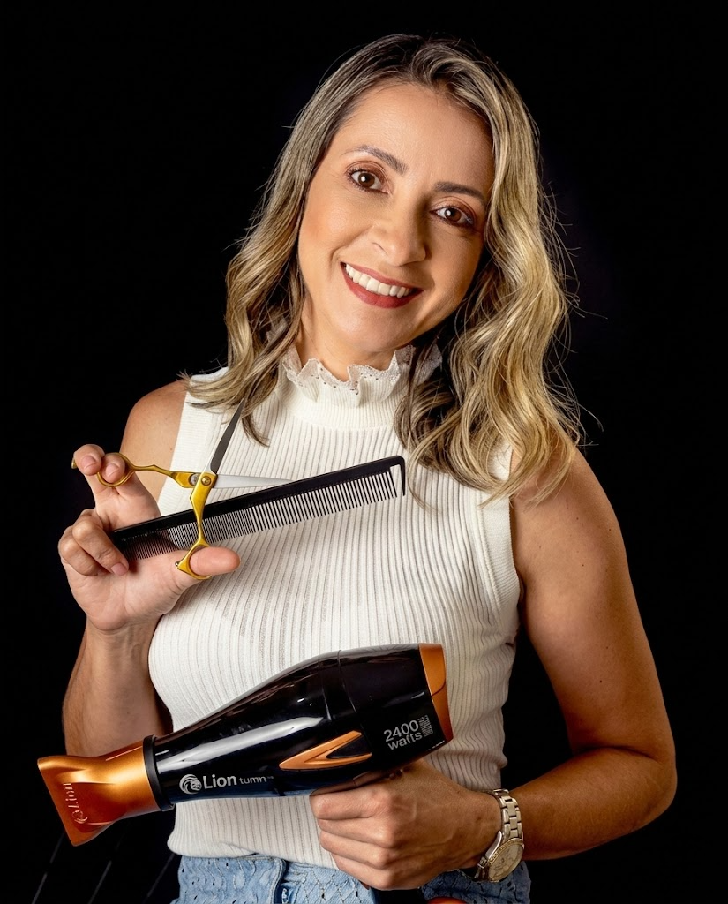
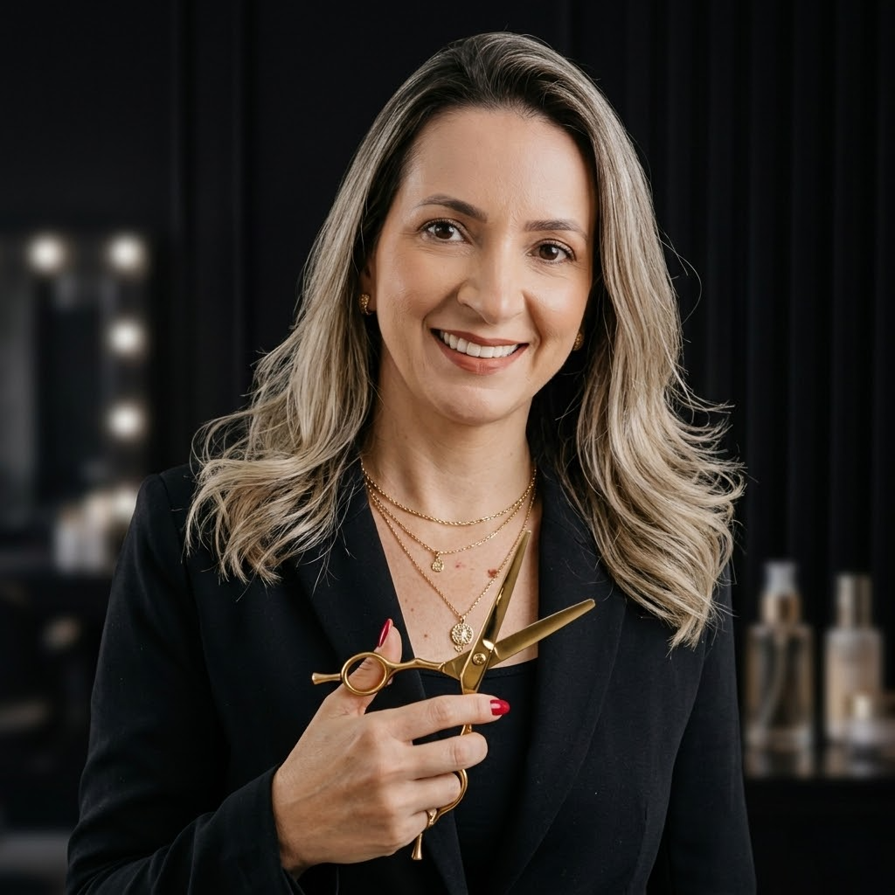

Coloração & Luzes
Mechas, balayage, loiro platinado e colorações completas com produtos de alta qualidade e técnica impecável.
Você merece sair do salão se sentindo a mulher mais linda de Itaperuna. Especialistas em colorimetria, cortes de design, escova e o Dia da Noiva dos seus sonhos.

A coloração ficou errada, o corte não ficou como você pediu...
Química malfeita que deixou o cabelo quebradiço e sem vida.
Passa o dia inteiro no salão sem previsão de quando será atendida.
Penteado que desmanchou nas primeiras horas da festa.
25 anos de experiência, formação SENAC e uma equipe de 7 profissionais treinados pessoalmente pela Fátima garantem o resultado que você merece.
Da manutenção do dia a dia ao grande evento da sua vida, temos o serviço perfeito para você.
Mechas, balayage, loiro platinado e colorações completas com produtos de alta qualidade e técnica impecável.
Técnicas de coloração naturais e degradê que valorizam cada fio com efeito sofisticado e moderno.
Cortes femininos personalizados que valorizam o rosto e o estilo de vida de cada cliente, assinados por Fátima Costa.
Pacote completo para o seu grande dia: penteado, make, escova e tratamento. Você merece estar deslumbrante.
Escova impecável com acabamento profissional que dura dias. A especialidade da casa, referência em Itaperuna.
Restauração profunda para cabelos danificados, com técnicas avançadas de hidratação e nutrição intensiva.
Modelagem personalizada que enquadra e valoriza o rosto, deixando o olhar mais marcante e expressivo.
Disciplinamento e alinhamento dos fios com produtos de qualidade para um resultado liso, brilhoso e duradouro.

Há 25 anos, Fátima Costa decidiu que as mulheres de Itaperuna mereciam um salão de beleza à altura do nível delas. E foi com essa missão que ela construiu, tijolo por tijolo, o espaço que hoje é referência indiscutível na cidade.
Formada com distinção e ex-instrutora do renomado SENAC Itaperuna, Fátima não apenas aprendeu as melhores técnicas — ela as ensinou. Esse bagagão de conhecimento é o que diferencia cada atendimento no salão.
Sua paixão pela transformação e pela excelência no acabamento fez com que ela se tornasse a escovista mais requisitada da região, além de referência em colorimetria e nos momentos mais especiais da vida das mulheres: o Dia da Noiva.
7 profissionais treinados e supervisionados pessoalmente por Fátima Costa — cada um mantendo o padrão de excelência que o nome do salão representa.
"A Fátima é a única que toca no meu cabelo há 12 anos. Já tentei outros salões em Itaperuna mas nenhum chega nem perto do resultado que ela entrega. Meu loiro é impecável!"
"Fiz meu Dia da Noiva no Salão Fátima Costa e foi perfeito. O penteado durou toda a festa, a make ficou incrível. Recebi elogios de todos os convidados. Super recomendo!"
"Vim de Campos para Itaperuna especificamente para fazer as mechas com a Fátima. O resultado foi simplesmente incrível! Valeu cada quilômetro. Já agendei o retorno."
"A equipe toda é muito atenciosa e qualificada. Nunca esperei mais de 10 minutos além do meu horário. Higiene impecável, ambiente lindo. É o único salão que eu indico em Itaperuna!"
"A Fátima tem um olhar único para colorimetria. Ela analisou meu tom de pele e sugeriu a cor perfeita para mim. Nunca tinha visto meu cabelo tão lindo. Ela é realmente uma artista!"
"Agendei online, fui no horário marcado e fui atendida na hora! Corte + escova com resultado de revista. O aplicativo facilitou muito, consegui marcar em 2 minutos pelo celular."
Sem ligação, sem espera. Escolha o serviço, o profissional, o dia e o horário — tudo online.
Escolha o melhor horário para você. Nossa equipe estará pronta para te receber!
Rua [Nome da Rua], Nº [Número]
Bairro [Nome], Itaperuna – RJ
CEP 28300-000
Segunda a Sexta: 09h às 19h
Sábado: 09h às 17h
Domingo: Fechado
As melhores clientes de Itaperuna já têm seu horário marcado. Garanta o seu antes que os slots da semana se esgotem.